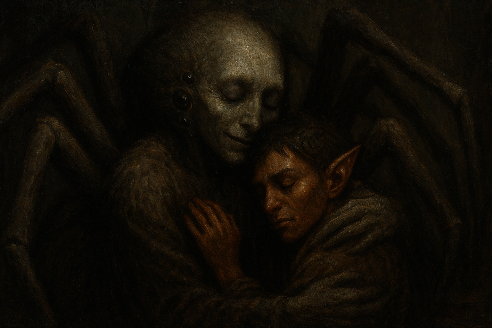

Chapter 2: Mother Reborn
Lurking Dangers


Lurking Dangers
15048.12.04
羅特提議應該要去見一下母親大人，於是他便帶著大家來到母親大人的神殿。
黑暗之中，羅特跪下，祈求母親大人治療他重傷的肩膀。在母親大人的觸碰下，羅特瞬間痊癒。喜極而泣的他，馬上決定加入蜘蛛神教，在母親大人的輕咬下，他知道母親大人完美的填補了他從小便沒有的的父母的位置。
母親大人也看向帕拉丁，感受到了他加入蜘蛛神教的事。然而，一個瞬間，母親大人突然像是癱軟了一樣，八隻腳撐著的身體重重摔在床上。圖伊特直覺式的睜開他的第三隻眼，看見一股能量在空中竄啊竄，然後直直射入母親大人的體內。母親大人再度站起，但整個氛圍感覺不太一樣，或者應該說，不太對勁。
「謝謝你啊，帕拉丁。」重生的母親大人對著帕拉丁説，但比起母親大人，他聽起來……更像是安娜的聲音。「你的任務已經完成了。」
語畢，母親大人的腳快速地朝著帕拉丁的脖子伸去。戰鬥一觸即發，冒險者們在逃跑與攻擊之間難以抉擇。圖伊特看見母親大人的靈魂在他被奪走的軀體與帕拉丁之間竄動，大喊了一聲，要靈魂鑽進帕拉丁的體內。靈魂快速竄入帕拉丁倒在地上的體內，這時他的肚子突然破開，八隻蜘蛛的腳破體而出，將他仰躺的身體從地面撐起，帕拉丁的臉望著天花板，頭殼裂了開來，成了蜘蛛的嘴。然後這副軀體便飛快的朝著神殿之外飛奔而出。羅特追了上去，比起夥伴的死亡，母親大人的失勢對他來說打擊更大。他嘗試追上蜘蛛，詢問他今後該怎麼辦？是否還有機會見到祂？羅特的腦中浮現了母親大人的聲音：「不是是否會見到，而是何時會見到。」然後蜘蛛便消失了蹤影。
房間內，被安娜奪走軀體的母親大人逐漸向後退去，伸出後腳，朝牆上的印記按了一下，然後就被傳送走了。圖伊特和華生決定到床頭探索，但也同時發現芒果不見了。
牆上的印記和之前見過的相同，羅特向前檢視，這印記他從小在貧民窟看過不少次，相同的形式，但多多少少有差異。圖伊特也感受到這應該附著有傳送魔法。印記旁是過去母親大人退回的洞穴。華生決定先前往洞穴內探索，要圖伊特和羅特先在洞外等他。
洞穴內毫無聲響，像是被下了魔法般的寂靜。走了好久，華生突然發現自己似乎踩到了一個陷阱。仔細觀察，「陷阱」像是一個按鈕，他輕輕把腳抬起，發現按鈕逐漸提升，無數隻的小蜘蛛從像是水管的通道爬了出來（水管的材質像是蜘蛛絲做成的，十分堅硬。），沒有目的的四處亂竄。華生對此感到十分困惑，在穴壁上做了個記號，然後就繼續前進了。
等了十分鐘，圖伊特和羅特決定也進到洞穴內探索。他們看見了華生留下的記號，以及突出的陷阱。
華生繼續向前走，最終走到了盡頭。洞穴的底端是個佈滿陷阱，多到足以觸發密集恐懼症的半球形凹槽。此時華生已經不再刻意避開陷阱了，地上滿是爬出來的小蜘蛛。華生採集了一些蜘蛛，便決定回頭走。
停留下來的圖伊特和羅特也採集了一些蜘蛛—活的，以及被踩死的。其中還有一些是看起來活動不太順暢的個體。圖伊特將看起來怪怪的蜘蛛用小刀剖開，發現不但沒有流出任何體液，這些小蜘蛛體內甚至比起組織，更像機械。他拿起正常的蜘蛛，剖開，發現裡頭也是機械。圖伊特膽大地將一隻小蜘蛛放在掌心，手掌傳來一陣刺痛，他的掌中心多了一個洞，肉眼看過去是透的，卻沒有留任何血。此時與他們會合的華生也見到了這樣的狀況。然而洞穴內無法說話，於是三人決定回到神殿去。
圖伊特將自己的發現分享給華生。三人決定去詢問大衛醫師，同時也將他們說好要還他的錢交給他。如果情況允許，也許也能見見他的弟弟，半神丹尼斯。
因為不知道大衛醫師私下的住處，三人只好先前往原本診所的廢墟。第一次見到這裡的羅特滿臉吃驚。圖伊特找了附近的路人，得知大衛醫師的住處就在附近，於是三人便趨身前往。
管家將大門打開，三人踏入大衛醫師家的大廳，大衛醫師不久後便從二樓下來。他得知帕拉丁的慘況後，因為帕拉丁是名有領地的爵士，趕緊叫管家去通知王室，準備為他舉行國葬。在華生和圖伊特和大衛醫師還錢的過程中，羅特偷偷溜上二樓，卻在二樓樓梯上看見了一個滿臉驚恐的人，喊著羅特是深淵來的。羅特滿臉困惑，然後得知這是大衛醫師的弟弟，自稱是半神的丹尼斯。他的偷竊計畫泡湯。大衛醫師將他的弟弟帶了下來，同時羅特也趕緊闡明自己只是從來沒進來過這麼大的房子，很好奇，所以才到處亂跑。
大衛醫師檢查了圖伊特的傷口，也看了他們帶回來的蜘蛛，覺得好奇，但也完全沒有頭緒。冒險者們決定給丹尼斯一個機會，畢竟完全沒有任何頭緒。丹尼斯看了看，提出一個說法：圖伊特的手被下了傳送魔法，他掌心的那一塊肉被傳送到其他地方去了。這話雖然聽起來十分荒唐，但又有一定程度的可能性。華生嘗試讀取丹尼斯的大腦，丹尼斯似乎在過去被抓到深淵去時，有見過類似的事。為了博取丹尼斯的信任，華生也自稱是半神，而丹尼斯也不假思索地相信他。出於好奇，他們也問了丹尼斯究竟是什麼宗教信仰的半神？丹尼斯則表示自己是「宇宙神」的半神。雖然對這神祇沒有概念，但因為說話的人是丹尼斯，冒險者也沒有什麼多想了。
三人與大衛醫師兄弟告別，決定去一趟小黑屋。華生在小黑屋門口等待，圖伊特和羅特準備下樓去，他們卻撞見了一名穿著斗篷，只露出下半臉的人，從樓梯走了上來。這是他們第一次在小黑屋見到另一名活人。圖伊特看了看那人，發現竟然是個他想不到還存在的人—那人的臉，和他前陣子看見了王宮大學士伊什頓長得一模一樣。圖伊特將第三隻眼睜開，想一探究竟，沒想到這人一看見他的第三隻眼，便跪了下來，表示自己奉月神之命，無條件服從圖伊特—有第三隻眼的他，地位非凡。圖伊特和他詢問為何伊什頓已死，他的軀體卻在這裡活動？這人表示月神讓他借用了伊什頓的身體，但裡面的靈魂是不同的。他告訴圖伊特需要他的時候，在心中默念他的名字—薩姆，他便會盡可能地快速趕來。語畢，他便離開了。
來到地下室，圖伊特和羅特向他們知道批在斗篷底下的陶瓷蘿琳詢問了一些問題，得知圖伊特掌心的肉被傳送到了麥克嵩的地下水道，同時也是蜘蛛神教的聚集場所；母親大人正朝著妖精王國內蜘蛛神教的發源地跑去；羅特詢問了自己的身世，了解到自己的父母：兩名魔人，當年偷偷潛入麥克嵩，將他拋棄在貧民窟後便逃走了，同時他也得知自己體內有魅魔的血統，如果要學習使用魅魔的力量，要練習拋棄理智，遵從本能。
離開小黑屋後，三人一起走回馬可斯家去。瑪莉安前來應門，發現他們又少了人，表示要是馬可斯知道，他一定會氣瘋的。等馬可斯從樓上下來，大家便先用晚餐。羅特詢問了他的師父伊的狀況，瑪莉安表示伊還在昏迷中，狀況並不好。
餐桌上，馬可斯的表情十分凝重，甚至他的餐盤一動也不動。他嘆了口氣，表示自己警告過大家要趕快離開麥克嵩，否則明天餐桌上不知道會不會又再少一人？華生提到有聽說之前在瑟巴諾，他、圖伊特、蘇加魯和伊努被殺死後再製而成的泥人，似乎正在前往麥克嵩的路途中，要是他們抵達了麥克嵩，肯定不會有好事，因此希望可以把他們除掉後，再啟程離開。同時，羅特也提到他想去找母親大人，這也得到了瑪莉安的認可，因此大家計劃在解決完泥人的問題後，便出發前往妖精王國。然而，沒有人懂妖精語，因此在華生的說服下，馬可斯決定和他在妖精王國的線人聯繫。
飯吃到一半，羅特看見窗外突然出現了一道亮光，然後一個看起來搞不清楚狀況的傢伙出現在窗前，那人意外的眼熟。是他們今天在地道遇見的那名地侏，芒果。羅特趕緊和他揮手，並告訴馬可斯這件事。馬可斯判斷這人也是他們的同伴，於是便到門口應門。
晚餐後，圖伊特和羅特去二樓的貴賓室就寢，而華生和芒果則在瑪莉安的招待下，暫時住在他的房間。瑪莉安則因為要照顧伊，這幾天都在伊的房間休息。
睡夢中，羅特感到無比的孤單。他分不清夢境與真實，只是想起自己被父母拋棄的事，就覺得難受。無盡的黑暗中，彷彿一切都是空的。他的手一伸，觸碰到了一個毛毛的東西。身體湊近，一股熟悉的味道。他突然感受到了一種他不曾擁有過的感覺，叫歸屬感。
15048.12.04
Lott suggested that he should go see The Mother, so he took everyone to the temple of The Mother.
In the darkness, Lott knelt down and prayed to The Mother to heal his seriously injured shoulder. Under the touch of The Mother, Lott healed instantly. He cried with joy and immediately decided to join the Spider God Cult. Under the bite of The Mother, he knew that The Mother perfectly filled the position of his parents that he had not had since he was a child.
The Mother also looked at Paladin and felt that he had joined the Spider God Cult. However, in an instant, The Mother suddenly seemed to be paralyzed, and his body supported by eight legs fell heavily on the bed. Tweeter intuitively opened his third eye and saw a stream of energy rushing through the air, and then shot straight into The Mother's body. The Mother stood up again, but the whole atmosphere felt different, or should be said, something was not right.
"Thank you, Paladin." The reborn The Mother said to Paladin, but compared to The Mother, he sounded... more like Anna's voice. "Your mission has been completed."
After finishing speaking, The Mother's feet quickly stretched towards Paladin's neck. The battle is about to break out, and the adventurers have a hard time choosing between escape and attack. Tweeter saw The Mother's soul moving between his stolen body and Paladin, and shouted, asking the soul to get into Paladin's body. The soul quickly rushed into the body of Paladin who was lying on the ground. At this time, his stomach suddenly burst open, and eight spider legs broke out of the body, lifting his body lying on his back from the ground. Paladin's face looked at the ceiling, and his head shell split open and became the spider's mouth. Then the body quickly flew out of the temple. Lott chased after him. Compared with the death of his partner, The Mother's loss of power was a bigger blow to him. He tried to catch up with the spider and asked him what he should do next? Is there still a chance to see Him? The voice of The Mother appeared in Lott's mind: "It's not whether we will see it, but when we will see it." Then the spider disappeared.
In the room, The Mother, whose body was taken away by Anna, gradually moved backwards, stretched out his hind legs, pressed on the mark on the wall, and was then teleported away. Tweeter and Watson decided to explore the bedside, but they also discovered that Mango was missing.
The mark on the wall was the same as the one he had seen before. Lott looked forward. He had seen this mark many times in the slums since he was a child. It was the same form, but more or less different. Tweeter also felt that there should be teleportation magic attached to this. Next to the mark is the cave that The Mother returned to in the past. Watson decided to explore the cave first and asked Tweeter and Lott to wait for him outside the cave.
There was no sound in the cave, as if it had been cast into magical silence. After walking for a long time, Watson suddenly realized that he seemed to have stepped into a trap. Observing carefully, the "trap" looked like a button. He gently lifted his foot and found that the button gradually lifted, and countless small spiders crawled out from the passage that looked like a water pipe (the material of the water pipe seemed to be made of spider silk, very hard.), scurrying around aimlessly. Watson was very confused by this, made a mark on the wall of the cave, and then moved on.
After waiting for ten minutes, Tweeter and Lott decided to explore the cave as well. They saw the marks left by Watson and the prominent traps.
Watson continued to move forward and finally reached the end. The bottom of the cave is a hemispherical groove filled with traps, enough to trigger trypophobia. At this time, Watson no longer deliberately avoided the trap, and the ground was full of little spiders crawling out. Watson collected some spiders and decided to turn back.
Tweeter and Lott who stayed here also collected some spiders - both alive and trampled to death. Some of them are individuals who seem to have difficulty moving around. Tweeter cut open the strange-looking spiders with a knife and found that not only did they not leak out any body fluids, but the insides of these little spiders were even more like machines than tissues. He picked up a normal spider, cut it open, and found that it was also mechanical inside. Tweeter boldly placed a small spider in the palm of his hand. There was a stinging pain in his palm. There was a hole in the center of his palm. It was see-through to the naked eye, but no blood was left. Watson who met them at this time also saw this situation. However, they could not speak in the cave, so the three decided to return to the temple.
Tweeter shares his findings with Watson. The three decided to question Dr. David and also give him the money they agreed to pay him back. If circumstances permit, maybe also meet his brother, the demigod Dennis.
Because they didn’t know Dr. David’s private residence, the three of them had to go to the ruins of the original clinic first. Lott was surprised when he saw this place for the first time. Tweeter found nearby passers-by and learned that Dr. David's residence was nearby, so the three of them headed there.
The housekeeper opened the door and the three of them stepped into the hall of Dr. David's house. Dr. David came down from the second floor soon after. After he learned of the tragic situation of Paladin, because Paladin was a territorial knight, he quickly asked the butler to notify the royal family and prepare to hold a state funeral for him. While Watson, Tweeter and Dr. David were paying back the money, Lott sneaked up to the second floor, but saw a frightened person on the second floor stairs, shouting that Lott was from the Deep. Lott looks confused and then learns that this is Dr. David's younger brother, Dennis, who claims to be a demigod. His theft plan failed. Dr. David brought his brother down, and Lott quickly explained that he had never been in such a big house before and was curious, so he was running around.
Dr. David checked Tweeter's wounds and looked at the spider they brought back. He was curious, but had no clue. The adventurers decided to give Dennis a chance, after all they had no clue. Dennis looked at it and came up with an idea: Tweeter's hand was under teleportation magic, and the piece of flesh in his palm was teleported to other places. Although this sounds very absurd, it is possible to a certain extent. Watson tried to read Dennis's brain. Dennis seemed to have seen similar things in the past when he was captured by the Deep. In order to gain Dennis's trust, Watson also claimed to be a demigod, and Dennis believed him without hesitation. Out of curiosity, they also asked what religious demigod Dennis was? Dennis states that he is a demigod of the "God of the Universe". Although he had no idea about this god, since the speaker was Dennis, the adventurer didn't think much about it.
The three of them said goodbye to their Dr. David brothers and decided to go to the dark room. Watson was waiting at the door of the small dark room. Tweeter and Lott were about to go downstairs, but they bumped into a man wearing a cloak, only showing the lower half of his face, walking up the stairs. This was the first time they saw another living person in the dark room. Tweeter looked at the man and found that it was someone he had never thought existed—the man's face looked exactly the same as Ishton, the Grand Archmaester of the Royal Palace, whom he had seen a while ago. Tweeter opened his third eye and wanted to find out. Unexpectedly, as soon as the man saw his third eye, he knelt down and expressed that he was under the command of the moon god and unconditionally obeyed Tweeter. He had an extraordinary status with the third eye. Tweeter and asked him why Ishton's body is moving here even though he is dead? The man said that Luna let him borrow Ishton's body, but the soul inside was different. He told Tweeter that when he needs him, recite his name silently in his heart - Sham, and he will come as quickly as possible. After speaking, he left.
Arriving in the basement, Tweeter and Lott asked some questions to Roline, the ceramic they knew was under the cloak, and learned that the flesh in Tweeter's palm was sent to the underground waterway of Macksohn, which is also the gathering place of the Spider Cult; The Mother is running towards the birthplace of the Spider Cult in the Goblin Kingdom; Lott After asking about his life experience, he learned about his parents: two demons who sneaked into Macksohn secretly, abandoned him in the slums, and then escaped. At the same time, he also learned that he had the blood of a succubus in his body. If he wanted to learn to use the power of a succubus, he must practice abandoning reason and following instinct.
After leaving the dark room, the three of them walked back to Marcus’ house. Marianne answered the door and found they were missing again, saying that Marcus would be mad if he knew. After Marcus comes downstairs, everyone has dinner first. Lott asked about the condition of his ShifuYi. Marianne said that Yi was still in a coma and his condition was not good.
At the dinner table, Marcus's expression was very solemn, and even his dinner plate didn't move. He sighed and said that he had warned everyone to leave Macksohn as soon as possible, otherwise there would be one less person at the dinner table tomorrow? Watson mentioned that he had heard that in Sebano, he, Tweeter, Sugalu and Inu were killed and the clay figurines that were remade seemed to be on their way to Macksohn. If they arrived at Macksohn, nothing good would happen, so they hoped to get rid of them before leaving. At the same time, Lott also mentioned that he wanted to find The Mother, which was also recognized by Marianne, so everyone planned to set off to the Fairy Kingdom after solving the problem of the clay figurines. However, no one understands the Goblin language, so with Watson's persuasion, Marcus decides to contact his informant in the Goblin Kingdom.
Halfway through the meal, Lott saw a bright light suddenly appear outside the window, and then a guy who seemed confused about the situation appeared in front of the window. The man looked surprisingly familiar. It was the dwarf they met in the tunnel today, Mango. Lott quickly waved to him and told Marcus about it. Marcus decided that this man was also one of their companions and went to the door to answer the knock.
After dinner, Tweeter and Lott went to sleep in the VIP room on the second floor, while Watson and Mango stayed in Marianne's room temporarily. Marianne has to take care of Yi, so she has been resting in Yi's room these days.
While sleeping, Lott felt extremely lonely. He couldn't distinguish between dreams and reality. He felt uncomfortable just thinking about being abandoned by his parents. In the endless darkness, everything seemed empty. He stretched out his hand and touched something Dawn Light Fur. The body came closer, and there was a familiar smell. He suddenly felt a feeling he had never had before, a sense of belonging.